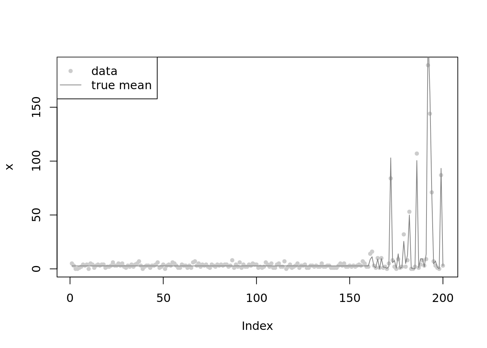
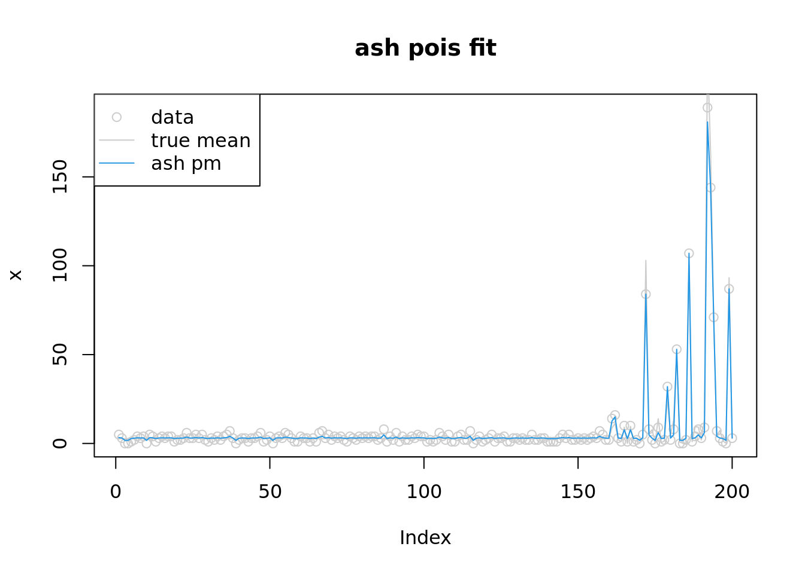
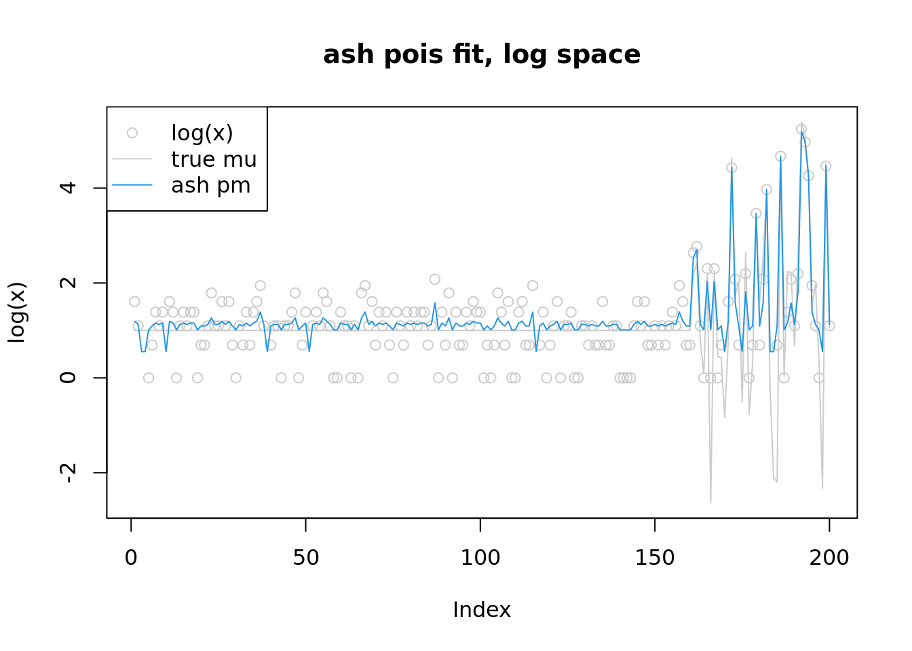
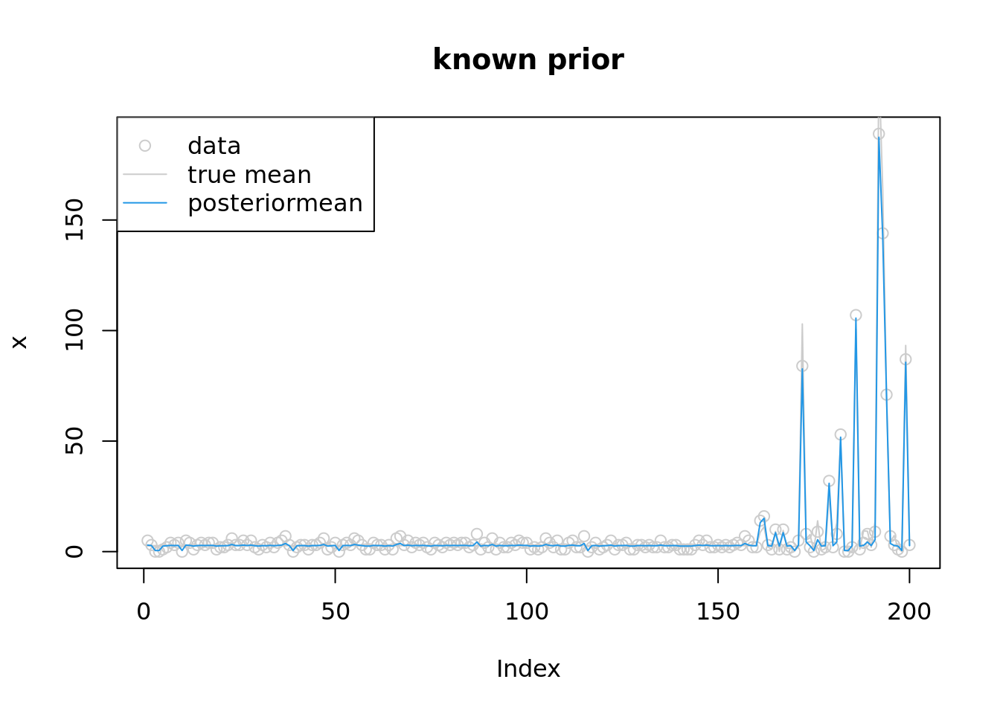
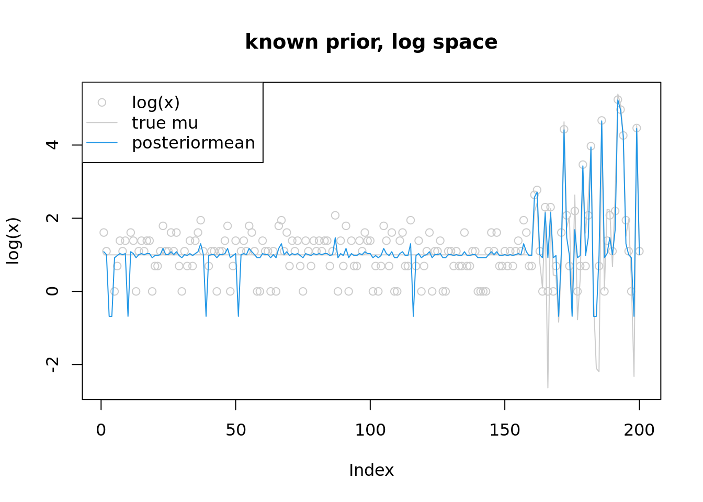
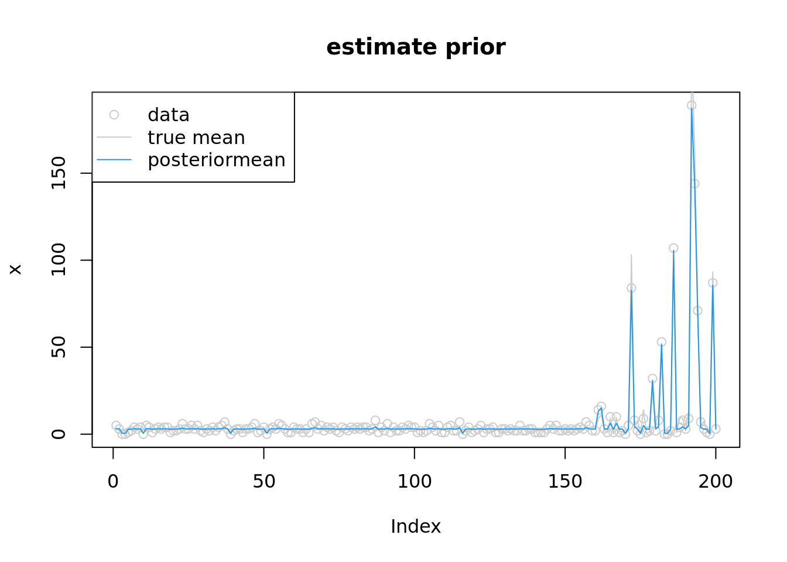

Last updated: 2022-10-12
Checks: 7 0
Knit directory: gsmash/
This reproducible R Markdown analysis was created with workflowr (version 1.7.0). The Checks tab describes the reproducibility checks that were applied when the results were created. The Past versions tab lists the development history.
Great! Since the R Markdown file has been committed to the Git repository, you know the exact version of the code that produced these results.
Great job! The global environment was empty. Objects defined in the global environment can affect the analysis in your R Markdown file in unknown ways. For reproduciblity it’s best to always run the code in an empty environment.
The command set.seed(20220606) was run prior to running
the code in the R Markdown file. Setting a seed ensures that any results
that rely on randomness, e.g. subsampling or permutations, are
reproducible.
Great job! Recording the operating system, R version, and package versions is critical for reproducibility.
Nice! There were no cached chunks for this analysis, so you can be confident that you successfully produced the results during this run.
Great job! Using relative paths to the files within your workflowr project makes it easier to run your code on other machines.
Great! You are using Git for version control. Tracking code development and connecting the code version to the results is critical for reproducibility.
The results in this page were generated with repository version 2b8229d. See the Past versions tab to see a history of the changes made to the R Markdown and HTML files.
Note that you need to be careful to ensure that all relevant files for
the analysis have been committed to Git prior to generating the results
(you can use wflow_publish or
wflow_git_commit). workflowr only checks the R Markdown
file, but you know if there are other scripts or data files that it
depends on. Below is the status of the Git repository when the results
were generated:
Ignored files:
Ignored: .Rproj.user/
Ignored: analysis/figure/
Unstaged changes:
Modified: analysis/index.Rmd
Modified: code/normal_mean_model_utils.R
Modified: code/poisson_mean/pois_mean_GMGM.R
Note that any generated files, e.g. HTML, png, CSS, etc., are not included in this status report because it is ok for generated content to have uncommitted changes.
These are the previous versions of the repository in which changes were
made to the R Markdown
(analysis/pois_mean_penalized_inversion.Rmd) and HTML
(docs/pois_mean_penalized_inversion.html) files. If you’ve
configured a remote Git repository (see ?wflow_git_remote),
click on the hyperlinks in the table below to view the files as they
were in that past version.
| File | Version | Author | Date | Message |
|---|---|---|---|---|
| Rmd | 2b8229d | DongyueXie | 2022-10-12 | wflow_publish("analysis/pois_mean_penalized_inversion.Rmd") |
Define the inversion function, \(z(\theta):=T(\theta;g)\), such that \(\theta = S_g(T(\theta;g),s^2(\theta))\). Then the optimization problem is \[\begin{equation} \min_{\theta,g} h(\theta,g) = -l(\theta) -l_{\text{NM}}(T(\theta;g);g,s^2(\theta)) - \frac{(\theta-T(\theta;g))^2}{2s^2(\theta)}- \frac{1}{2}\log 2\pi s^2(\theta). \end{equation}\]
set.seed(12345)
n = 200
w = 0.2
mu = c(rep(1,n*(1-w)),rnorm(n*w,1,2))
lambda = exp(mu)
x = rpois(n,lambda)
plot(x,main='',col='grey80',pch=20)
lines(lambda,col='grey50')
legend('topleft',c('data','true mean'),pch=c(20,NA),lty=c(NA,1),col=c('grey80','grey50'))
library(ashr)
fitash = ash_pois(x,link='log')
fitash$fitted_g$pi
[1] 0.00000000 0.78352925 0.00000000 0.00000000 0.00000000 0.00000000
[7] 0.00000000 0.00000000 0.07102210 0.03142074 0.00000000 0.00000000
[13] 0.11402791 0.00000000 0.00000000 0.00000000 0.00000000 0.00000000
[19] 0.00000000 0.00000000 0.00000000 0.00000000 0.00000000 0.00000000
[25] 0.00000000 0.00000000
$a
[1] 1.12559896 1.03410935 0.99621311 0.94261973 0.86682726
[6] 0.75964051 0.60805555 0.39368205 0.09051213 -0.33823487
[11] -0.94457469 -1.80206870 -3.01474835 -4.72973636 -7.15509566
[16] -10.58507168 -15.43579028 -22.29574232 -31.99717953 -45.71708361
[21] -65.11995803 -92.55976618 -131.36551501 -186.24513132 -263.85662899
[26] -373.61586159
$b
[1] 1.125599 1.217089 1.254985 1.308578 1.384371 1.491557
[7] 1.643142 1.857516 2.160686 2.589433 3.195773 4.053267
[13] 5.265946 6.980934 9.406294 12.836270 17.686988 24.546940
[19] 34.248377 47.968282 67.371156 94.810964 133.616713 188.496329
[25] 266.107827 375.867060
attr(,"class")
[1] "unimix"
attr(,"row.names")
[1] 1 2 3 4 5 6 7 8 9 10 11 12 13 14 15 16 17 18 19 20 21 22 23 24 25
[26] 26plot(x,col='grey80',main='ash pois fit')
lines(lambda,col='grey80')
lines(fitash$result$PosteriorMean,col=4)
legend('topleft',c('data','true mean','ash pm'),pch=c(1,NA,NA),lty=c(NA,1,1),col=c('grey80','grey80',4))
plot(log(x),col='grey80',main='ash pois fit, log space',ylim=range(c(log(lambda),log(fitash$result$PosteriorMean),log(x+1))))
lines(log(lambda),col='grey80')
lines(log(fitash$result$PosteriorMean),col=4)
legend('topleft',c('log(x)','true mu','ash pm'),pch=c(1,NA,NA),lty=c(NA,1,1),col=c('grey80','grey80',4))
source("code/normal_mean_model_utils.R")
f_obj_known_g = function(theta,y,w,mu,grid,z_range){
s = sqrt(exp(-theta))
z = S_inv(theta,s,w,mu,grid,z_range)
return(sum(-y*theta+exp(theta)-l_nm(z,s,w,mu,grid)-(theta-z)^2/2/s^2-log(2*pi*s^2)/2))
}
#'@return derivative of l_nm(z(theta);g,s^2(theta)) w.r.t theta
l_nm_d1_theta = function(z,theta,s,w,mu,grid){
l_nm_d1_z(z,s,w,mu,grid)*z_d1_theta(z,theta,s,w,mu,grid) + l_nm_d1_s2(z,s,w,mu,grid)*(-exp(-theta))
}
z_d1_theta = function(z,theta,s,w,mu,grid){
numerator = 1-(-exp(-theta))*l_nm_d1_z(z,s,w,mu,grid) - exp(-theta)*(-exp(-theta))*l_nm_d2_zs2(z,s,w,mu,grid)
denominator = 1 + exp(-theta)*l_nm_d2_z(z,s,w,mu,grid)
return(numerator/denominator)
}
f_obj_grad_known_g = function(theta,y,w,mu,grid,z_range){
s=sqrt(exp(-theta))
z = S_inv(theta,s,w,mu,grid,z_range)
exp(theta)-y-l_nm_d1_theta(z,theta,s,w,mu,grid) - (2*s^2*(theta-z)*(1-z_d1_theta(z,theta,s,w,mu,grid))-(-exp(-theta))*(theta-z)^2)/2/s^4 - (-exp(-theta))/2/s^2
}w = c(0.8,0.2)
mu = 1
grid = c(0,2)
theta_init= log(x+1)
fit = optim(theta_init,f_obj_known_g,f_obj_grad_known_g,method = 'L-BFGS-B',y=x,w=w,mu=mu,grid=grid,z_range=c(-10,10),control=list(trace=1))iter 10 value -2879.079901
iter 20 value -2880.393150
iter 30 value -2880.874997
iter 40 value -2880.888047
final value -2880.888053
convergedplot(x,col='grey80',main='known prior')
lines(lambda,col='grey80')
lines(exp(fit$par),col=4)
legend('topleft',c('data','true mean','posteriormean'),pch=c(1,NA,NA),lty=c(NA,1,1),col=c('grey80','grey80',4))
plot(log(x),col='grey80',main='known prior, log space',ylim=range(c(log(lambda),fit$par,log(x+1))))
lines(log(lambda),col='grey80')
lines(fit$par,col=4)
legend('topleft',c('log(x)','true mu','posteriormean'),pch=c(1,NA,NA),lty=c(NA,1,1),col=c('grey80','grey80',4))
#'@param params (theta,w,mu)
f_obj = function(params,y,grid,z_range){
n = length(y)
K = length(grid)
theta = params[1:n]
a = params[(n+1):(n+K)]
w = softmax(a)
mu = params[n+K+1]
s = sqrt(exp(-theta))
z = S_inv(theta,s,w,mu,grid,z_range)
return(sum(-y*theta+exp(theta)-l_nm(z,s,w,mu,grid)-(theta-z)^2/2/s^2-log(2*pi*s^2)/2))
}
#'@return derivative of l_nm(z(theta);g,s^2(theta)) w.r.t theta
l_nm_d1_g = function(z,theta,s,a,mu,grid){
w=softmax(a)
l_nm_d1_z(z,s,w,mu,grid)*z_d1_g(z,theta,s,a,mu,grid) + cbind(l_nm_d1_a(z,s,a,mu,grid),l_nm_d1_mu(z,s,w,mu,grid))
}
z_d1_g = function(z,theta,s,a,mu,grid){
w=softmax(a)
n_a = -s^2*(l_nm_d2_za(z,s,a,mu,grid))
d_a = 1+s^2*l_nm_d2_z(z,s,w,mu,grid)
n_mu = -s^2*l_nm_d2_zmu(z,s,w,mu,grid)
d_mu = 1+d_a
return(cbind(n_a/d_a,n_mu/d_mu))
}
f_obj_grad=function(params,y,grid,z_range){
n = length(y)
K = length(grid)
theta = params[1:n]
a = params[(n+1):(n+K)]
w = softmax(a)
mu = params[n+K+1]
s = sqrt(exp(-theta))
z = S_inv(theta,s,w,mu,grid,z_range)
grad_theta = exp(theta)-y-l_nm_d1_theta(z,theta,s,w,mu,grid) - (2*s^2*(theta-z)*(1-z_d1_theta(z,theta,s,w,mu,grid))-(-exp(-theta))*(theta-z)^2)/2/s^4 - (-exp(-theta))/2/s^2
grad_g = colSums(-l_nm_d1_g(z,theta,s,a,mu,grid) - 2*(z-theta)*z_d1_g(z,theta,s,a,mu,grid)/2/s^2)
return(c(grad_theta,grad_g))
}grid = c(0,1e-3, 1e-2, 1e-1, 0.16, 0.32, 0.64, 1, 2, 4, 8, 16)
K = length(grid)
w_init = rep(1/K,K)
mu_init = 0
params_init= c(log(x+1),w_init,mu_init)
fit = optim(params_init,f_obj,f_obj_grad,method = 'L-BFGS-B',y=x,grid=grid,z_range=c(-10,10),control=list(trace=1,maxit=1000))iter 10 value -2873.371073
iter 20 value -2876.625269
iter 30 value -2879.884605
iter 40 value -2881.571784
iter 50 value -2882.105220
iter 60 value -2882.423544
iter 70 value -2882.672287
iter 80 value -2882.887599
iter 90 value -2883.009545
iter 100 value -2883.059629
iter 110 value -2883.091114
iter 120 value -2883.108346
iter 130 value -2883.125990
iter 140 value -2883.192869
iter 150 value -2883.275224
iter 160 value -2883.301363
iter 170 value -2883.315618
iter 180 value -2883.321574
iter 190 value -2883.326597
iter 200 value -2883.334567
iter 210 value -2883.344463
iter 220 value -2883.355673
iter 230 value -2883.359485
iter 240 value -2883.362023
iter 250 value -2883.365714
iter 260 value -2883.367713
final value -2883.367885
convergedround(softmax(fit$par[(n+1):(n+K)]),3) [1] 0.266 0.266 0.259 0.034 0.004 0.000 0.000 0.000 0.171 0.000 0.000 0.000fit$par[n+K+1][1] 1.11336plot(x,col='grey80',main='estimate prior')
lines(lambda,col='grey80')
lines(exp(fit$par[1:n]),col=4)
legend('topleft',c('data','true mean','posteriormean'),pch=c(1,NA,NA),lty=c(NA,1,1),col=c('grey80','grey80',4))
plot(log(x),col='grey80',main='estimate prior,log space',ylim=range(c(log(lambda),fit$par[1:n],log(x+1))))
lines(log(lambda),col='grey80')
lines(fit$par[1:n],col=4)
legend('topleft',c('log(x)','true mu','posteriormean'),pch=c(1,NA,NA),lty=c(NA,1,1),col=c('grey80','grey80',4))which(fit$par[1:n]<0) [1] 3 4 10 39 51 116 170 175 183 184 198which(x==0) [1] 3 4 10 39 51 116 170 175 183 184 198
sessionInfo()R version 4.2.1 (2022-06-23)
Platform: x86_64-pc-linux-gnu (64-bit)
Running under: Ubuntu 20.04.5 LTS
Matrix products: default
BLAS: /usr/lib/x86_64-linux-gnu/blas/libblas.so.3.9.0
LAPACK: /usr/lib/x86_64-linux-gnu/lapack/liblapack.so.3.9.0
locale:
[1] LC_CTYPE=C.UTF-8 LC_NUMERIC=C LC_TIME=C.UTF-8
[4] LC_COLLATE=C.UTF-8 LC_MONETARY=C.UTF-8 LC_MESSAGES=C.UTF-8
[7] LC_PAPER=C.UTF-8 LC_NAME=C LC_ADDRESS=C
[10] LC_TELEPHONE=C LC_MEASUREMENT=C.UTF-8 LC_IDENTIFICATION=C
attached base packages:
[1] parallel stats graphics grDevices utils datasets methods
[8] base
other attached packages:
[1] ashr_2.2-54 workflowr_1.7.0
loaded via a namespace (and not attached):
[1] Rcpp_1.0.9 highr_0.9 compiler_4.2.1 pillar_1.8.1
[5] bslib_0.4.0 later_1.3.0 git2r_0.30.1 jquerylib_0.1.4
[9] tools_4.2.1 getPass_0.2-2 digest_0.6.29 lattice_0.20-45
[13] jsonlite_1.8.2 evaluate_0.17 tibble_3.1.8 lifecycle_1.0.3
[17] pkgconfig_2.0.3 rlang_1.0.6 Matrix_1.5-1 cli_3.4.1
[21] rstudioapi_0.14 yaml_2.3.5 xfun_0.33 fastmap_1.1.0
[25] invgamma_1.1 httr_1.4.4 stringr_1.4.1 knitr_1.40
[29] fs_1.5.2 vctrs_0.4.2 sass_0.4.2 grid_4.2.1
[33] rprojroot_2.0.3 glue_1.6.2 R6_2.5.1 processx_3.7.0
[37] fansi_1.0.3 rmarkdown_2.17 mixsqp_0.3-43 irlba_2.3.5.1
[41] callr_3.7.2 magrittr_2.0.3 whisker_0.4 ps_1.7.1
[45] promises_1.2.0.1 htmltools_0.5.3 httpuv_1.6.6 utf8_1.2.2
[49] stringi_1.7.8 truncnorm_1.0-8 SQUAREM_2021.1 cachem_1.0.6